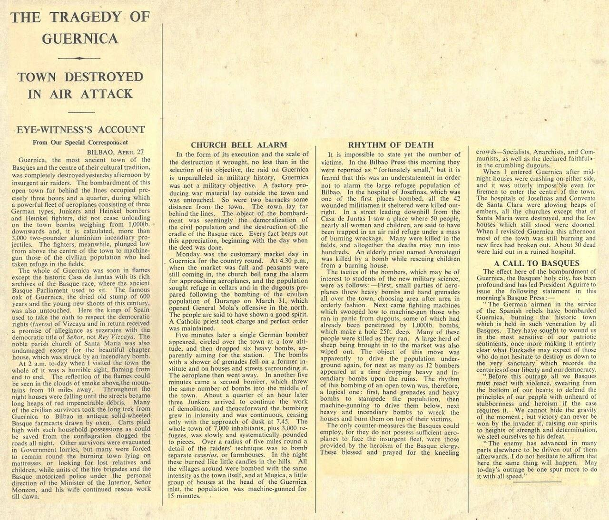
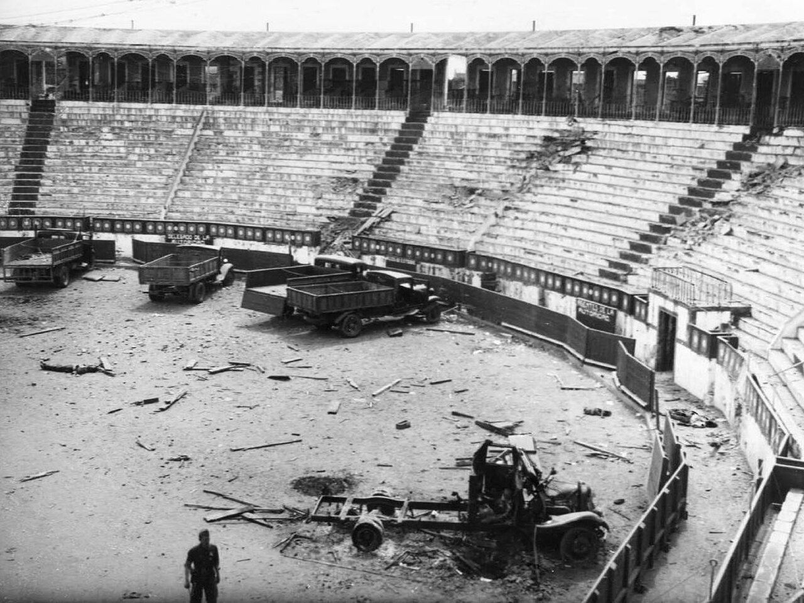
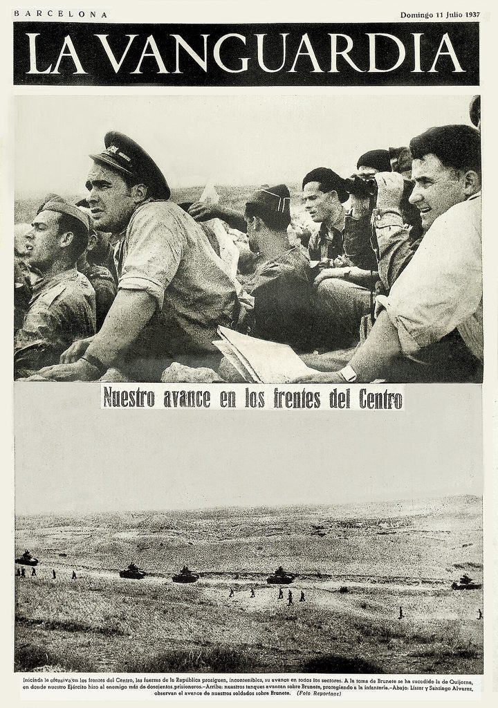
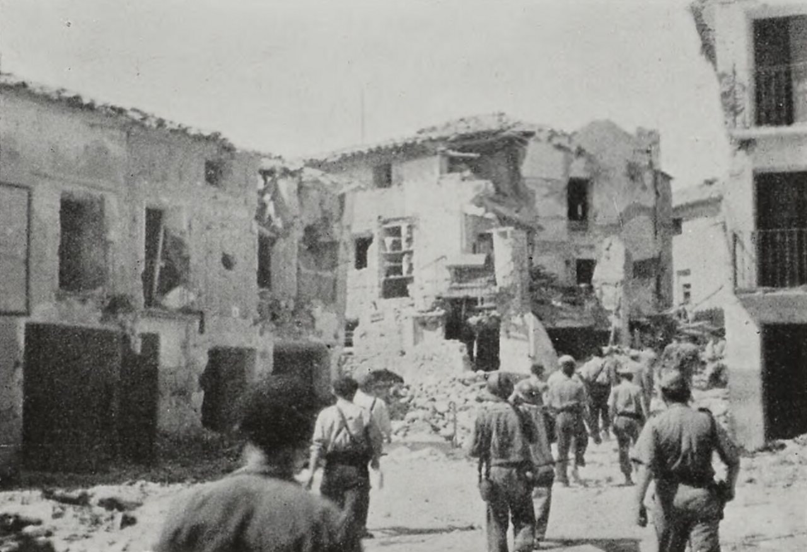

Actualidad · Antes de la guerra · España
Gernika votó al PNV en 1936 y volvió a hacerlo en 2023, por 11 votos; Belchite tiene hoy menos electores que antes de su batalla
Gernika, Badajoz, Paracuellos, Brunete y Belchite. España aprendió sus nombres por un bombardeo, dos matanzas y dos batallas. Antes de eso fueron cinco municipios que votaron el 16 de febrero de 1936. Así votaron entonces y así votan ahora.
Por Nacho G. del Álamo ·

Cada párrafo lleva una etiqueta: dato (cifra comprobable con las fuentes), patrón (relación que se repite, sin afirmar la causa), hipótesis (explicación posible, sin dos fuentes independientes) o contexto (hechos y declaraciones publicados por otros, enlazados). Cómo verificamos
ContextoEl corresponsal de The Times George Steer llegó a Gernika pasada la medianoche del 26 al 27 de abril de 1937 y escribió su crónica desde Bilbao a la mañana siguiente. Empieza así: «Guernica, la ciudad más antigua de los vascos y el centro de su tradición cultural, fue completamente destruida ayer por la tarde por los aviones de los insurgentes». Unos párrafos más abajo da un dato que explica la hora: «El lunes era el día habitual de mercado en Guernica para toda la comarca». Y otro que explica el resto: «Guernica no era un objetivo militar» (la crónica, en inglés; traducción propia).
.jpg){kind=link}
ContextoCatorce meses antes, en febrero de 1936, los vecinos de Gernika habían votado en unas elecciones generales. También los de Badajoz, los de Paracuellos de Jarama, los de Brunete y los de Belchite. El Atlas Electoral de la Segunda República de la Universitat Pompeu Fabra recoge aquellos resultados municipio a municipio, y desde esta semana están en nuestro mapa. Hemos buscado esos cinco nombres.
Gernika: once votos
DatoEn febrero de 1936, la candidatura del PNV sacó el 49,0% de los votos a candidatos en Gernika y los pueblos que entonces formaban su municipio. Las derechas llegaron al 41,5% y el Frente Popular, al 9,5%. Había 5.515 electores. Noventa años después, en las generales de julio de 2023, el PNV volvió a ser el partido más votado en Gernika-Lumo: 3.220 votos, el 36,6%. EH Bildu sacó 3.209. La diferencia fue de 11 votos.

ContextoEste 26 de abril, en el 89 aniversario, sonaron las sirenas a las 15.45, la hora en que empezó el bombardeo. El alcalde, José María Gorroño, habló de la memoria como «no solo un reconocimiento, sino un deber asumido ante la historia y ante la conciencia colectiva», según EITB. «No es un ejercicio retórico», dijo.
Badajoz: la ciudad que votó al Frente Popular
DatoLa ciudad de Badajoz tenía 20.900 electores en febrero de 1936. Votó el 70%. El Frente Popular sacó el 55,7% y las derechas, el 44,2%. En 1933 habían ganado las derechas, con el 53,5%.
ContextoEl 14 de agosto de 1936, las tropas sublevadas del teniente coronel Juan Yagüe tomaron la ciudad. Los prisioneros, sobre todo civiles, fueron encerrados en la plaza de toros, y esa misma noche empezaron las ejecuciones, según el resumen de la Wikipedia en inglés, que recoge estimaciones de entre 500 y 4.000 muertos. La lista nominal del historiador Francisco Espinosa reúne 1.341 víctimas, y él mismo la considera incompleta. El periodista estadounidense Jay Allen lo contó desde Elvas, al otro lado de la frontera portuguesa, en el Chicago Tribune del 30 de agosto: «Esta es la historia más dolorosa que me ha tocado escribir» (traducción publicada en El Salto).

DatoEn 2023, Badajoz tenía 118.739 electores, casi seis veces más que en 1936. La derecha sumó el 60,0%, con el PP en el 43,4%, y el PSOE se quedó en el 30,0%.
Paracuellos: 417 electores
DatoParacuellos de Jarama era un pueblo de 417 electores. En febrero de 1936 votó el 82%. Las derechas ganaron con el 55,0%, frente al 44,8% del Frente Popular. En 1933 había ganado el PSOE, con el 45,6%.
ContextoEntre noviembre y principios de diciembre de 1936, con Madrid sitiada, miles de presos sacados de las cárceles de la capital fueron llevados en camiones a los campos de Paracuellos y de Torrejón de Ardoz, fusilados y enterrados en fosas comunes. Las cifras varían: Paul Preston y Gabriel Jackson dan un mínimo de unos mil muertos; Hugh Thomas, Antony Beevor o Julián Casanova hablan de entre 2.000 y 2.700. Las órdenes de saca, la responsabilidad de Santiago Carrillo y el papel de los asesores soviéticos se siguen debatiendo, según recoge la Wikipedia en inglés. Las víctimas no eran vecinos del pueblo: venían de Madrid.
DatoEn 2023, Paracuellos tenía 16.776 electores, 40 veces más que en 1936. La derecha sumó el 65,4% y el PP, solo, el 48,1%.
Brunete: el pueblo que se reconstruyó
DatoBrunete tenía 886 electores. Votó el 74%, y las derechas sacaron el 63,9%, frente al 36,1% del Frente Popular.
ContextoEl 6 de julio de 1937, el ejército republicano lanzó una ofensiva al oeste de Madrid para aliviar el cerco de la capital. Ese mismo día, a mediodía, Brunete cayó en sus manos. El 24 de julio lo recuperaron las tropas de Franco (Wikipedia en inglés). Las bajas se cuentan por decenas de miles. «Como consecuencia de los combates, la localidad quedó destruida», resume la Wikipedia en español; «fue reconstruida en la posguerra por la Dirección General de Regiones Devastadas».

DatoEn 2023, Brunete tenía 7.154 electores, ocho veces más. La derecha sumó el 64,9%, casi lo mismo que las derechas en 1936. Es, de los cinco, el único donde el mapa apenas se ha movido.
Belchite: menos electores que en 1936
DatoBelchite tenía 2.122 electores en febrero de 1936 y votó el 82%, la participación más alta de los cinco. Ganó el Frente Popular con el 40,4%. Las derechas sacaron el 36,2% y el centro, el 23,4%.
ContextoEl asedio duró catorce días, del 24 de agosto al 6 de septiembre de 1937. «Nadie sabe la cifra exacta» de muertos, dijo el alcalde, Carmelo Pérez, a la BBC; los historiadores la sitúan entre 4.000 y 5.000. Ernest Hemingway escribió que «lucharon de casa en casa, de habitación en habitación, rompiendo paredes con piquetas». Después de la guerra, Franco decidió dejar las ruinas en pie y construir un pueblo nuevo al lado. Los últimos vecinos dejaron el pueblo viejo en 1964. Para el alcalde, es un lugar «que representa lo que fue una guerra civil, una guerra entre hermanos, entre padres e hijos».

DatoEn julio de 2023, Belchite tenía 1.221 electores: 901 menos que en 1936, aunque entonces solo votaban los mayores de 23 años. Es el único de los cinco que ha perdido electores. Votó el 80%, y la derecha sumó el 58,7%, con el PP en el 40,6%.
Lo que estos datos no dicen
ContextoNada de lo que pasó en estos cinco lugares se explica por cómo votaron sus vecinos. A Gernika la bombardearon aviones de la Legión Cóndor alemana y de la Aviación Legionaria italiana, al servicio de los sublevados. A los presos de Paracuellos los trajeron de Madrid. Badajoz votó al Frente Popular y Paracuellos a las derechas, y en los dos hubo matanzas, cometidas por bandos distintos. Los datos dicen cómo votaban estos pueblos seis meses antes de la guerra. Nada más.
ContextoEn 1936 se votaba con listas abiertas y varios votos por elector; aquí, el peso de cada candidatura es su parte de los votos a candidatos. El censo era de mayores de 23 años y el de 2023, de 18. Quienes votaron aquel febrero tendrían hoy al menos 113 años.
ContextoEn el pueblo viejo de Belchite no vota nadie desde 1964. Las calles siguen ahí, sin tejados. Los vecinos votan en el pueblo nuevo. En 1936 eran 2.122 electores. Ahora son 1.221.
Mira 1933 y 1936 en tu municipio, en el mapa · Más: Los pueblos de Lorca · El mapa de 1936 apenas se parece al de hoy
Método y fuentes
- Qué se compara
- Cinco municipios conocidos por la Guerra Civil (Gernika-Lumo, Badajoz, Paracuellos de Jarama, Brunete y Belchite) en las generales del 19 de noviembre de 1933, del 16 de febrero de 1936 y del 23 de julio de 2023.
- Límites
- El voto de un municipio no explica lo que pasó en él durante la guerra: las víctimas de Paracuellos venían de las cárceles de Madrid y Gernika fue bombardeada por aviones alemanes e italianos. En 1936 se votaba con listas abiertas y varios votos por elector; el peso de cada candidatura es su parte de los votos a candidatos. En 1936, Gernika incluye los pueblos que entonces formaban su municipio (Ajangiz, Arratzu, Kortezubi, Forua, Murueta y Nabarniz); en 2023, solo Gernika-Lumo. El censo de 1936 era de mayores de 23 años y el de 2023, de 18. Las cifras de víctimas son estimaciones de historiadores y varían mucho. Sin voto exterior en 2023.
- Cómo se calcula
- Porcentaje de voto de cada candidatura (1936) y de cada partido (2023) en el municipio; electores del censo de cada elección. Diferencia de votos entre PNV y EH Bildu en Gernika-Lumo en 2023, con los resultados por mesa. Cifras reproducibles con los scripts del expediente de la pieza. Metodología de Actualidad · Metodología del Atlas
- Fuentes
- Toni Rodon, Pau Vall-Prat y Diego Martín Álvarez, Electoral Atlas of the Spanish Second Republic (1931-1936), Universitat Pompeu Fabra, CORA Repositori de Dades de Recerca (CC BY-NC-SA 4.0)
- Ministerio del Interior, resultados electorales por mesa (Infoelectoral), vía pollspaindata. Sin voto exterior (CERA)
- George Steer, «The tragedy of Guernica. Town destroyed in air attack», The Times (28-4-1937)
- EITB, «Gernika recuerda a las víctimas del bombardeo en su 89 aniversario» (26-4-2026)
- Félix Población, «Se cumplen 85 años de la masacre de Badajoz, contada por el periodista Jay Allen», El Salto (14-8-2021)
- Wikipedia, «Badajoz massacre» (consultada el 23-10-2026)
- Wikipedia, «Paracuellos massacres» (consultada el 23-10-2026)
- Wikipedia, «Battle of Brunete» (consultada el 23-10-2026)
- Wikipedia, «Brunete» (consultada el 23-10-2026)
- BBC News Mundo, «La Pompeya española: el pueblo que quedó congelado en el tiempo» (10-8-2025)
- Autoría
- Nacho G. del Álamo
- Revisión de datos y texto
- Nacho G. del Álamo, 23 de octubre de 2026
- Publicado · actualizado
- 23 de octubre de 2026 · 23 de octubre de 2026
- Correcciones
- Ninguna.
Serie «Historia electoral»: 29 piezas
- 16 de 16: Plasencia ha votado al ganador en todas las elecciones generales desde 1977
- Dos Hermanas ha votado al PSOE en las 16 generales; solo 11 pueblos, ninguno grande, lo han hecho con el PP
- De 5.990 municipios a 762 en tres años: así se hundió UCD, y así cayó Ciudadanos en solo seis meses
- Donde se votaba a UCD y AP en 1977 se vota a PP y Vox en 2023; el mapa de Vox no se parece al de AP
- 6 de cada 10 municipios tienen menos electores que en 1977; Las Rozas tiene 14 veces más
- Ávila dio a Suárez el 46 % en 1986, cuando su partido sacaba el 9 % en España
- Trebujena dio al PCE dos de cada tres votos en 1977 y aún da a Sumar uno de cada dos
- En 1982 el PSOE pasaba del 60 % en al menos 748 municipios; en 2023, en 67
- Barcelona, Terrassa o Dos Hermanas: 864 municipios donde la derecha estatal nunca ha ganado unas generales
- Pozuelo, Getxo o Ávila: 1.932 municipios donde el PSOE nunca ha ganado unas generales
- Siete partidos distintos han ganado en Mont-roig del Camp: ha cambiado 11 veces de ganador en 16 generales
- En Baltar votó el 16 % en 1979; hoy vota el 79 %. La participación imposible del interior gallego
- En Arona votó uno de cada cinco electores en las europeas de 2014
- Tres partidos en 1,3 puntos: el empate a tres de Euskadi en 2023 no tiene precedentes
- El voto en blanco se multiplicó por seis entre 1977 y 2000, y desde entonces se ha reducido a la mitad
- Antes de Teruel Existe: los cinco diputados andalucistas de 1979 y el 19,7 % de Cádiz
- De 23,6 a 35,1 millones: el censo electoral ha crecido un 49 % desde 1977
- Las europeas solo superan el 60 % de participación cuando coinciden con las municipales
- El mapa de 1936 apenas se parece al de hoy: 1.545 pueblos que votaron a las derechas eligen ahora a la izquierda
- Fuente Vaqueros, el pueblo de Lorca, dio el 77,5 % al Frente Popular; Víznar, donde lo mataron, el 63 % a las derechas
- Estás aquíGernika votó al PNV en 1936 y volvió a hacerlo en 2023, por 11 votos; Belchite tiene hoy menos electores que antes de su batalla
- Las mujeres votaron por primera vez en 1933 y ganaron las derechas; en 1936 volvieron a votar y 888 pueblos se pasaron al Frente Popular
- 256 pueblos han votado a la izquierda en 1936 y en las 16 generales de la democracia; 1.610, siempre a la derecha
- Cuando la CNT pidió no votar, en Alcalá de Gurrea votaron 87 de 829 electores; dos años después, 517
- Riaño dio el 86 % a las derechas en 1936; Mequinenza, el 89 % al Frente Popular. Así votaban los pueblos que se tragaron los pantanos
- Vallecas dio el 86 % al Frente Popular y Franco la borró del mapa: los 1.334 pueblos que votaron en 1936 y ya no existen
- Mieres votó en masa dieciséis meses después de la revolución: el 86 % fue a las urnas y el 79 % eligió al Frente Popular
- Vic dio el 69 % a la Lliga en 1933 y hoy es la gran ciudad de Junts; L'Hospitalet dio el 77 % al Front d'Esquerres de Companys y hoy vota al PSC
- Los pueblos que levantó Franco votan más a Vox que sus vecinos: en Tiétar, Rosalejo y Pueblonuevo de Miramontes pasó del 25 %
Más datos: más piezas sobre historia electoral.
Sigue leyendo
- Ciudades partidasSevilla vota por barrios y Lugo, mezclada: el índice que mide qué capitales están partidas por el voto
- Ni tan ricos ni tan obrerosVox busca el voto de los barrios obreros: en la Región de Murcia, nueve de cada diez secciones pobres ya votan más a PP y Vox que a PSOE y Sumar
- Dos aceras, dos ganadoresA cinco semanas del 29N: en la calle de los Hermanos García Noblejas, en Madrid, PP y PSOE se cambian de acera 12 veces, y el PP siempre gana en el lado con más renta
- ActualidadTodas las piezas de actualidad
- AtlasAtlas de las anomalías electorales